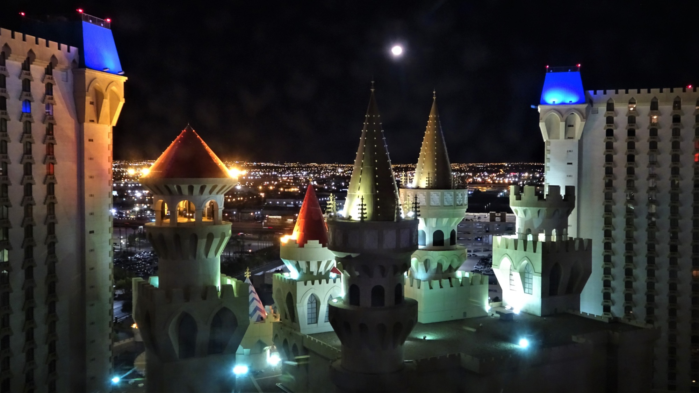
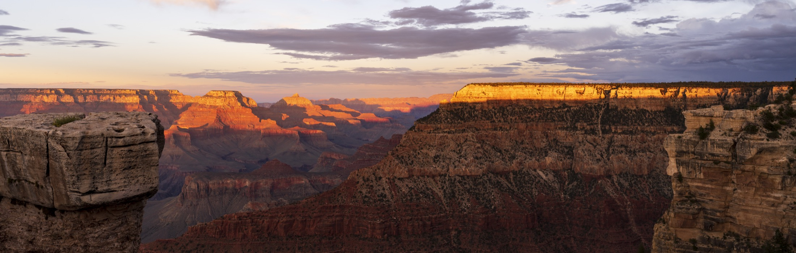

2026.06.22 - 06.27 / Las Vegas
WSOP 2026
旅のしおり
旅行準備と現地行動をまとめた、当日に見るためのしおり。集合、持ち物、タイムテーブル、注意点だけをすぐ確認できる形にする。
Home
まず見るページ
出発前と現地で確認する情報を、修学旅行のしおりのようにまとめる。
Daily Pages
日付ごとに見る
当日は該当日だけ開く。集合、行き先、持ち物、次に見るページを1枚にまとめる。
出発前
現地日付に合わせて当日のカードを自動で目立たせる。
現地/日本
LV --:-- / JP --:--
6/22 月到着・ウェルカムホテル導線と早寝
目的Horseshoe周辺、WSOP会場、水・軽食調達場所に慣れる。
固定18:00-21:00 Ellis Island Casino ウェルカムパーティー。
やるBell Desk、WSOP会場、Rideshare Lot、CVS/Walgreens候補を確認。
持つパスポート、スマホ、財布、上着、水。
詳しく見る
6/23 火$250 DailyWSOP会場に慣れる
目的13:00 Daily Deepstackを打ち、翌日のTag Team導線も確認する。
行き先Horseshoe Las Vegas and Paris Las Vegas のWSOP会場。
確認WSOP registration、Verification、Caesars Rewards、Daily受付、Event #66掲示。
持つパスポート、$250、支払い手段、上着、水。
詳しく見る
6/24 水Tag Team10:00 registrationへ
目的Event #66 $1,000 No-Limit Hold'em Tag Teamに2人で出る。
行き先WSOP registration / verification。聞く言葉は Event 66 Tag Team registration。
時刻10:00会場、11:15登録確認、11:45着席準備、12:00開始。
持つパスポート、Caesars Rewards、WSOP LIVE、$500想定、上着、水。
詳しく見る
6/25 木Grand Canyon05:05 pickup
目的South Rimツアー。夜予定は入れず、帰着後は休む。
集合05:05 Horseshoe Las Vegas Rideshare Lot / North Entrance。
地図NPE公式pickupページ の GET DIRECTIONS を使う。
目印Flamingo Road側、High Roller方向、Real Bodies Exhibit近く。
持つ非公開予約票、ID、カード、水、上着、モバイルバッテリー。fee $100/人はnon-cash。
詳しく見る
6/26 金フリー日体力で選ぶ
目的Grand Canyon翌日なので回復優先。無理に予定を詰めない。
A回復・買い物・近場散歩。
B体力があればDaily、フリーロール、短時間キャッシュ。
夜最終日に備えて荷物整理、チケット表示、空港導線確認。
詳しく見る
6/27 土Sphere + 空港荷物回収を最優先
目的Sphereを見て、荷物回収と空港集合を崩さない。
午前チェックアウト。荷物はHorseshoe Bell Deskまたは最終案内の指定場所。
公演14:00 The Wizard of Oz at Sphere。13:15目安で入場列。
注意大きいバッグをSphereへ持って行かない。終演後は写真より荷物回収。
詳しく見る
Concierge Desk
予約・当日サポート
確定している旅程、予約済みの内容、提示するもの、現地で追加払いするものをまとめる。
到着・ウェルカム
Horseshoeへ移動。18:00-21:00 Ellis Island Casino。
確認: 受付/参加費$250 Daily
13:00 WSOP Daily Deepstack。敗退後はキャッシュか休息。
持つ: パスポート/現金Tag Team
Event #66、12:00開始。2人で1チーム、$1,000/team。
確認: 登録/交代ルールSouth Rim
予約済み。05:05 Horseshoe Rideshare Lot pickup。
予約: 確定済みフリー日
回復、お土産、近場散歩、Daily、フリーロールを体力で選ぶ。
固定しないSphere + 帰国導線
The Wizard of Oz 14:00方針。荷物回収と空港集合を崩さない。
未完: 座席/荷物/集合次に潰すこと
1Sphereチケットは友人担当待ち。確定後は座席エリア、入場時刻、スマホ表示だけ公開版へ反映。
26/24 Tag Teamは現地確認前提。6/23に会場導線、6/24は10:00目安でregistration / verificationへ向かう。
36/27の荷物預けと空港集合を最終案内で確認。Sphereには大きいバッグを持って行かない。
4dカード GOLD U付帯保険、USD現金、クレカ暗証番号/限度額を確認。Grand Canyon fee $200はnon-cashで払える状態にする。
未完了リスク
Sphereチケット友人担当待ち
6/27 14:00のメイン体験。友人側の購入/確保後、公開版には座席エリアと入場時刻だけ反映。
次: スマホ表示、バッグ注意、QRを公開しない運用を確認。Tag Team登録は現地確認
6/24 12:00開始。6/23に会場導線を見て、6/24は10:00目安で動く。
次: パスポート、支払い手段、交代ルールを同じメモに集約。6/27荷物・空港集合未確定
Sphereに大きいバッグは持たない。Bell Desk、ツアー側集合場所、空港移動時刻を最終案内で確定。
次: チェックアウト後の荷物預け、Sphere後の回収時刻、空港集合の締切を1本の時系列にする。渡航書類と保険
パスポート/ESTA番号一致、dカード GOLD U付帯、追加保険要否、カード停止窓口を確認。
次: 公開版には番号を入れず、非公開メモと紙だけに保管。現金とカード構成
USD現金は$1,800-$2,200基本レンジで可変運用。ポーカー用、生活用、Emergencyに分ける。
次: 1日上限、ポーカー用財布、予備カード保管場所を決める。Tag Team登録作戦
前日まで
2人ともWSOP LIVE、Caesars Rewards、パスポート、支払い手段を準備。初回Verificationは1時間以上余裕を見る。
当日
10:00目安でVersailles Ballroom方面へ。Event #66は12:00開始、2人チーム、20,000 chips。
ルール
チームは一緒に登録。登録終了までに各メンバーが着席確認し、少なくとも1周のブラインドをプレイする。
Sphere最終日作戦
午前
チェックアウト後、荷物はHorseshoe Bell Deskかツアー指定場所へ。Sphereへ大きいバッグは持って行かない。
13:15
開場時刻。The Wizard of Ozは14:00開始、遅刻入場不可。スマホチケットをWalletに入れておく。
15:30以降
終演後はホテルへ戻って荷物回収。空港集合時刻が出たら、観光より移動を優先する。

Confirmed
Grand Canyon South Rim
National Park Express / Grand Canyon National Park Tour from Las Vegas with Lunch
予約番号と予約票は公開版に載せない。当日は各自のメール、Wallet、ローカル保存から開く。
Horseshoe Las Vegas Rideshare Lot。Flamingo Road側North Entrance外、Real Bodies Exhibit近く。
非米国居住者fee。Grand Canyon National Park入場時にnon-cashで別途支払い。2人分$200をnon-cash対応で払えるようにする。
公式サイトまたは非公開の予約確認メールから確認する。
Grand Canyon 集合場所ナビ
行き先Horseshoe Las Vegas Rideshare Lot / North Entrance
地図National Park Express公式pickupページ の GET DIRECTIONS を開く。
検索語地図アプリでは Horseshoe Las Vegas Rideshare Lot または Horseshoe Las Vegas North Entrance を検索。
目印Flamingo Road側、High Roller Ferris Wheel方向、The Cromwell/Flamingo方面、Real Bodies Exhibit近く。
聞くホテルスタッフに Where is the rideshare lot / North Entrance facing Flamingo Road?
前夜部屋から実際に歩く。04:50に出て05:00到着できる導線にする。
6/25 朝の動き
04:15起床。服、日焼け止め、トイレ、軽食。
04:40予約票、カード、ID、水、上着、モバイルバッテリーを確認。
05:00Horseshoe Rideshare Lotに到着して車両/ガイドを待つ。
05:05pickup予定。遅れそうならすぐNPEへ連絡。
入場時非米国居住者feeの支払い案内に従う。現金ではなくnon-cash。
On-site Assistant
現地サポート
朝に見ること、困った時の動き、すぐ使う連絡先をまとめる。
到着日
ホテル導線、水・軽食、WSOP会場の位置だけ確認。夜は無理しない。
水 / 充電 / 早寝Daily
13:00開始。初回ならWSOP登録・Caesars Rewardsを早めに済ませる。
パスポート / $250 / 上着Tag Team
10:00目安でVersailles Ballroom方面へ。チーム登録、支払い、交代ルールを確認。
2人集合 / $500想定 / IDSouth Rim
04:15起床、05:05 pickup。集合場所はFlamingo Road側North Entrance外。
予約票 / カード / 水 / 上着回復日
午前は軽く。お土産、散歩、Daily、フリーロール、キャッシュを体力で選ぶ。
固定しない / 現金上限Sphere + 空港
チェックアウト後は荷物を預ける。Sphereへ大きいバッグを持って行かない。
スマホチケット / 荷物回収当日ナビ
WSOP会場Horseshoe Las Vegas and Paris Las Vegas。6/23は部屋からWSOP registration / verificationまで歩いて確認。
6/23 Daily13:00 Daily Deepstack。行き先はWSOP会場のDaily Deepstack / registration案内。
6/24 Tag Team10:00にWSOP registration / verificationへ向かう。聞く言葉は Event 66 Tag Team registration。
6/25 Grand Canyon05:00にHorseshoe Rideshare Lot / North Entrance。Flamingo Road側、High Roller方向。
地図Grand Canyon集合は NPE公式pickupページ の GET DIRECTIONS を使う。
迷ったら公開しおりより、当日のWSOP案内板、予約票、ツアー最終案内、driver tracking linkを優先。
60秒SOSカード
安全確保、相方連絡、非公開控え、911の判断だけを先に見る。
SOSカード集合に間に合わない
まず相方に連絡。予約系は会社へ連絡。Grand Canyonは非公開の予約確認メールを開き、予約番号を伝える。
財布・カード
カード会社に停止連絡。予備カードとEmergency現金で当日を動かす。現金は同じ財布に集約しない。
暑さ・疲労
水、日陰、冷房、休息を優先。Grand Canyon翌日は予定を詰めない。保険の緊急窓口をすぐ見られるようにする。
荷物と空港
Sphere後はホテルへ戻って荷物回収。空港集合時刻が来たら観光より移動を優先する。
すぐ使う連絡先・場所
Emergency米国の緊急通報は911。命・事故・犯罪は迷わず使う。
Hotel BaseHorseshoe Las Vegas。WSOP会場、Bell Desk、Rideshare Lotを初日に確認。
Grand CanyonNational Park Express公式連絡先は非公開の予約確認メールから確認。予約番号は公開版に載せない。
Cardsクレカ停止窓口、保険の緊急窓口、ツアー緊急連絡先は出発前にスマホと紙へ保存。
Timetable
日付ごとのタイムテーブル
現地ではこのページを見れば、その日の大枠と注意点が分かる。
到着・ウェルカムパーティー
夕方ホテル周辺、会場導線、CVS/Walgreensで水・軽食を買う。
18:00Ellis Island Casino ウェルカムパーティー。
夜翌日のDailyに備えて軽め。無理にカジノで粘らない。
Daily Deepstack + キャッシュ
午前WSOP会場、登録導線、Caesars Rewards/WSOP LIVEまわりを確認。
13:00$250 Daily Deepstack NLHに参加。
飛んだら$1/$2キャッシュ候補。勝ち残ったら夜予定は入れない。
Tag Team
10:00初回Verificationや登録に備えてVersailles Ballroom方面へ。
12:00Event #66 $1,000 No-Limit Hold'em Tag Team。
夜結果と体力次第。翌日のSouth Rimが早朝なので休息優先。
Grand Canyon South Rim
04:15起床。予約票、カード、ID、水、上着、モバイルバッテリーを確認。
05:05Horseshoe Las Vegas Rideshare Lot pickup。Flamingo Road側North Entrance外、Real Bodies Exhibit近く。
05:15National Park Express出発。予約票は各自の端末に非公開で保存しておく。
入場時非米国居住者fee $100/人をnon-cashで別途支払い。2人で$200をnon-cash対応で払えるようにする。
夜帰着後は軽食と休息。drop-off場所は前日/当日案内で確認。
フリー日
朝Grand Canyon翌日なので休息優先で開始。
昼お土産、カジノ散歩、Daily、キャッシュから体力で選ぶ。
夜最終日に備えて荷物整理。空港移動とチェックアウト準備。
Sphere + 最終日
10:00チェックアウト。Horseshoe Bell Deskに荷物預け想定。
14:00Sphere The Wizard of Oz。13:15-13:30には入場列へ。
15:45以降ホテルへ戻り荷物回収。空港集合時刻に合わせて移動。
Packing
持ち物リスト
「日本から持っていく」「機内に入れる」「現地で買う」「日別に持つ」を分ける。
機内持ち込み
- パスポート、ESTA控え、予約票
- 現金、クレカ2枚、スマホ
- 薬、充電器、モバイルバッテリー
- 1日分の着替え、イヤホン
預け荷物
- 衣類、洗面具、予備の靴下
- 液体類の予備、日焼け止め
- 帰りのお土産用スペース
- 刃物類や工具類は預け荷物へ
日本から持つ / 現地で買う
- カップ麺は肉・鶏・豚エキスなしを少量
- 肉系スープ、かやく肉入りは避ける
- 水、追加の軽食、日用品は現地調達
- CVS/Walgreensで初日に調達
日別に持つもの
カジノの日パスポート、現金、クレカ、スマホ、充電、羽織りもの。
South Rim予約票、カード、ID、上着、水、軽食、酔い止め、サングラス、モバイルバッテリー。
Sphereスマホチケット、財布、必要最低限の小物。大きいバッグは持たない。
食品の入国食べ物は申告する。肉・鶏・豚・ビーフブロス等を含むカップ麺は避け、判断に迷うものは持って行かない。
Checklist
出発前チェック
出発前に潰すもの。チェック状態はブラウザに保存される。
名前・番号・期限
パスポート、ESTA、ツアー登録名、予約票をスマホと紙で確認。
最優先固定予定を開ける状態
Grand Canyon予約票、Sphereチケット、空港集合案内、ホテル情報をオフラインでも見られる状態にする。
Wallet / オフライン保存現金とカードを分ける
USD現金、クレカ2枚、暗証番号、限度額、カード停止窓口を確認。
$1,800-$2,200基本レンジ困った時の連絡先
相方、ツアー緊急連絡先、保険窓口、NPE、カード会社をスマホと紙に保存。
911 / 保険 / NPE書類・入国
WSOP・ポーカー
予約・お金・保険
飛行機・荷物FAQ
機内持ち込みはどこまで？
ZIPAIRは合計2個まで。目安は1つ目が40 x 25 x 55cm、2つ目が35 x 25 x 45cm。無料枠は2個合計7kgまで。
預け荷物の注意点は？
受託手荷物は1人最大5個まで。1個あたり30kg超、または3辺合計203cm超は不可。貴重品、現金、電子機器は預けない。
持ち込み禁止で気をつけるものは？
刃物、切るための道具、スポーツ用具は機内持込不可。モバイルバッテリーなど予備リチウム電池は預けず機内へ。
Money
お金の早見表
ツアー代は支払い済みなので、現地で追加で使うお金だけを見る。
ポーカー、チップ、交通、緊急用。分けて持つ。
現地追加の標準目安。体験重視、食費節約。
Sphere、Grand Canyon、お土産、必要な追加支払い。
Daily + Tag Team$750
$1/$2キャッシュ候補$300-$500
South Rim + Sphere$445-$545+
食事・移動・土産$850目安
節約方針
食事聖地巡礼系以外は軽食、カップ麺、現地スーパー系で節約。
体験食費よりGrand Canyon、Sphere、WSOP体験に予算を寄せる。
現金ポーカー用と生活用を分ける。全額を同じ財布に入れない。
Reference Desk
詳細資料
迷ったらここから開く。公開版なので、予約番号・個人名・予約票ファイルは置かない。
友人最初の10分
案内最終
現在地状態
判定GO/NO-GO
送信文面
今日司令室
添乗日別
SOS60秒
お金財布
体力休憩
移動導線
共有1枚サマリー
現地ポケット旅程
初日出発・到着
6/25Grand Canyon
6/27最終日
荷物空港集合
楽しむミッション
候補観光・食事
SOS困った時
友人
友人向けクイックスタート
URLを受け取った直後に、スマホへ入れるものと非公開で持つものを10分で確認。
最初の10分 案内公開用 最終案内書
旅行代理店の最終案内書のように、見る順番、確定予定、未完、緊急時の入口を1枚で確認。
最初に読む 現在地旅の現在地ダッシュボード
予約済み、公開しおりとして使えるもの、未完実務、次の作業順を分けて確認。
進捗確認 判定出発GO/NO-GOカード
出発前日に、公開しおり、非公開控え、紙、スマホ、荷物がそろったか判定。
前日判定 今日今日の司令室
現地で朝起きて最初に見る、日別の3アクション、NG、次に開く資料。
毎朝 SOS60秒SOSカード
現地で焦った時に、安全確保、相方連絡、非公開控え、911判断だけを先に確認。
緊急時 お金毎朝マネーカード
Daily wallet、ポーカー資金、Emergencyを混ぜずに、使いすぎを止める現地ルール。
毎朝 体力体力・休憩カード
睡眠、水、食事、暑さ、翌日の固定予定から、今日は攻めるか休むかを判定。
毎朝 移動現地移動カード
Horseshoeを拠点に、WSOP、Grand Canyon集合、Sphere、空港集合で迷わない。
現地用 共有1枚サマリー
友人に最初に共有する、全体像・固定予定・未決事項の要約。
最初に読む 送信友人へ送るメッセージ集
最初のURL共有、Grand Canyon前日、朝チェック、緊急時など、そのまま送れる公開用文面。
共有用 台帳コンシェルジュ台帳
旅行全体の状態、友人に渡す順番、未確定の潰し方を1枚で確認。
担当者メモ 現地ポケット旅程表
日別の時刻、朝チェック、持ち物、困った時の動きを1枚で確認。
まず開く 毎朝毎朝ブリーフィング
今日の目的、固定時刻、持ち物、避けることを日別に確認。
朝見る 添乗日別コンシェルジュ
スマホで縦に読む添乗メモ。朝、移動前、寝る前の優先順位を確認。
現地用 準備出発前カウントダウン
Sphere、Tag Team、保険、USD、荷物を出発日までの順番で潰す。
出発前 最終出発前最終チェック
公開しおり、非公開控え、スマホ、紙、荷物が出発できる状態か判定。
前日 判定GO/NO-GO判定
NO-GOが残った時に、どの順番で潰すかを確認。
前日 紙紙のミニカード
スマホ紛失・電池切れ時に動ける、印刷用の最小行動カード。
印刷 スマホスマホセットアップ
公開しおり、非公開控え、SOS手順、オフライン確認を出発前に仕込む。
出発前 決定決定管制表
未確定事項を優先順位、次の一手、更新先つきで確認。
相談用 更新更新マップ
予約・購入・確認後に、どの資料へ何を反映するかを確認。
編集前 反映確定情報反映フォーム
購入・最終案内・保険・現金が決まった時、公開版へ書ける要点だけ抜き出す。
編集前 最終最終トラベルパック
出発前日にスマホ、紙、非公開控えへ入れるものを確認。
前日 支援現地サポート手順
遅刻、紛失、体調不良、カード停止、予定変更時の動きを確認。
困った時 非公開個人情報の持ち方
予約番号、チケットQR、保険、カード停止窓口を公開せずに持つ。
公開前 安全保険・カード控え
保険、カード停止、Emergency現金、緊急導線をGitLab外で整える。
SOS準備 6/24Tag Team登録
WSOP LIVE、Caesars Rewards、支払い、交代ルール、当日の集合時刻。
最優先 6/27Sphere + 空港導線
14:00公演、13:15開場、昼前の荷物預け、終演後のホテル戻りと空港集合。
最優先 荷物荷物・空港集合カード
チェックアウト、Bell Desk、Sphere後の荷物回収、空港集合の逆算ルール。
最終日 購入Sphere購入カード
Ticketmaster公式URL、2席連番、座席注意、Wallet追加、公開版への反映先。
購入前 6/26フリー日 A/B/C
Grand Canyon翌日の体力で、回復、散歩、ポーカー追加から選ぶ。
当日判断 楽しむ旅のミッションカード
予定を増やさず、写真、食事、ポーカー、観光の小さな楽しみを日別に選ぶ。
現地用 予約予約済み一覧
公開できる予約状況、集合時刻、集合場所、支払いメモだけをまとめる。
公開用 6/25Grand Canyon
05:05 pickup、集合場所、追加fee、持ち物、帰着後の注意。
予約済み 日程日別スケジュール
6/22から6/29までの固定予定、候補、差し替え案。
現地用 荷物飛行機・荷物FAQ
機内持込、預け荷物、モバイルバッテリー、液体類、帰りのお土産。
出発前 初日出発・到着導線
成田、機内、ラスベガス到着、Horseshoe初動を1枚で確認。
出発日 お金予算メモ
現地追加費用、ポーカー、観光、食事、チップ、カード支払い。
確認 資金現金・カード運用
ポーカー資金、日常財布、Emergency、ATM、カード停止時の持ち方。
現地用 根拠参照元
WSOP、Sphere、Grand Canyon、ZIPAIR、予算まわりの確認元。
更新時 公開公開前チェック
GitLab Pagesへ出す前の個人情報、PDF、同期、リンク確認。
コミット前 Pages公開後ガイド
GitLab Pages公開後の確認URL、友人への共有順、更新時の見方。
公開後 Issue未決事項たたき台
Sphere、最終日荷物、Tag Team、現金、保険、6/26候補をIssue化。
次に進める公開版のルール
予約票PDF、予約番号、参加者名、確認メール、パスポート/ESTA番号、カード情報、保険証券番号はGitLabに置かない。必要な番号は各自のメール、Wallet、ローカル保存、紙の控えで持つ。